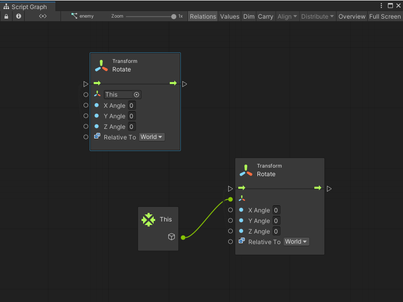
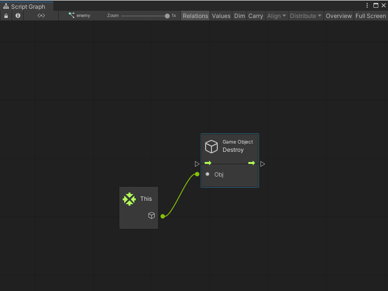

This node¶
Use a This node to return a GameObject with a Script Machine component that has the Script Graph. If the Script Machine uses an Graph source and multiple GameObjects use the same graph, the returned GameObject can change.
Many nodes default their target to This. For example, the following Transform nodes are the same:

Not all nodes support the This inline value. Any node that doesn’t support the This inline value displays None instead of This in the default value field. For example, the Destroy node displays None.
In these cases, manually specify the connection if you want to use This.

You can use the This node in a graph even if the graph isn’t yet assigned to a GameObject. The This node represents the GameObject that owns the graph at runtime.